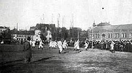

Sejarah

Setelah pertikaian antara manajemen klub dan pemain dari MTV 1879 München di bar “Gisela” di Schwabing, 11 pemain memutuskan untuk memisahkan diri dan membentuk klub sendiri di bawah manajemen Franz John pada 27 Februari 1900.
Nama yang dipilih untuk klub yang baru adalah FC Bayern München. Ini adalah awal dari cerita sukses yang unik.
Kemenangan pada tahun 1932 di Nuernberg pada final melawan Eintracht Frankfurt adalah kemenangan pertama dari total 20 gelar kemenangan. FC Bayern München tidak ikut saat Bundesliga dibentuk. Namun pada tahun 1965, klub ini
dipromosikan dan menjadi nomor tiga pada musim berikutnya dan sejak saat itu menjadi anggota tetap di Bundesliga, memenangkan 28 gelar kemenangan Bundesliga dan menempatkan klub ini diurutan utama dari Bundesliga. Sejauh ini, FC
Bayern München adalah klub tersukses.
Seratus tahun pertama Bayern München, Sejarah dan kisah suksesnya dimulai dan diakhiri dengan nama Franz. Apakah ini suatu kebetulan bahwa Franz John yang mendirikan FC Bayern dan seabad kemudian dengan Franz yang berbeda, kali
ini Beckenbauer yang memimpin Bayern München menjadi klub yang disegani dan ideal dengan setumpuk gelar dibelakangnya pada abad yang baru sebagai presidennya. Banyak hal yang membedakan masa dulu dan sekarang. Franz John
mendirikan dan membangun Bayern dari nol dan cukup senang dengan hasil kemenangan 7-1 Bayern dalam pertandingan pertamanya melawan tim sebelumnya, MTV 1879. Tapi John juga memberikan klub yang “karismatik” ini dengan keunikan
pertamanya. Pada awal mulanya, orang-orang mengenalnya sebagai Bayern, kemudian sebagai Schwabinger Bayern, dari topi unik para pemainnya. Pada masanya, Franz Beckenbauer telah membantu Bayern München menjadi seperti dirinya
saat ini: klub internasional dengan jutaan penggemar, sebuah institusi yang menjangkau sampai jauh di luar persepak bolaan Jerman. Tidak pernah dalam impiannya yang tergila sekalipun Franz John membayangkan bahwa timnya akan
menjadi juara Jerman, juara Piala Eropa dan bahkan pemenang kejuaraan antar klub internasional.
Stadion Allianz Arena

Allianz Arena adalah nama sebuah stadion sepak bola yang terletak di distrik Fröttmaning di sebelah utara kota Munchen, Jerman. Stadion ini dibuka pada tanggal 30 Mei 2005 dengan pertandingan persahabatan antara TSV 1860 München
dan 1. FC Nürnberg. Di stadion ini juga menjadi tempat penyelenggaraan Final Liga Champions UEFA 2012 yang dimenangkan oleh Chelsea yang merebut trofi pertamanya setelah mengalahkan Bayern München, yang kebetulan juga sebagai
pemilik stadion.
Stadion ini juga merupakan tempat diadakannya pertandingan pembukaan Piala Dunia FIFA 2006. Setelah selesai dibangun, stadion ini menggantikan Olympiastadion sebagai stadion kandang bagi TSV 1860 München dan FC Bayern München.
Stadion ini dirancang oleh firma arsitektur Swiss, Herzog & de Meuron dan kapasitasnya adalah 66.000 penonton. Kerak bagian luar menampilkan 1056 panel berbentuk belah ketupat, yang masing-masing dapat diterangi dalam warna yang
berbeda (merah, biru atau putih), sehingga terlihat seperti suatu pola yang bergerak.
Prestasi
Bayern secara historis adalah tim paling sukses di sepakbola Jerman, karena mereka telah memenangkan kejuaraan dan piala terbanyak. Mereka juga tim Jerman yang paling sukses dikompetisi internasional, setelah memenangkan sebelas
trofi. Bayern adalah satu dari hanya lima klub yang telah memenangkan ketiga kompetisi utama Eropa dan juga klub terakhir yang memenangkan tiga gelar Piala Eropa berturut-turut dalam format turnamen KO lama, memberikan hak
kepada mereka untuk mengenakan lencana kehormatan selama pertandingan Liga Champions.
Domestik
Pada lingkup domestik, Bayern Munchen telah menjuarai banyak kejuaraan dan merupakan yang terbanyak di Jerman. Di Bundesliga (kasta tertinggi liga Jerman) sendiri, Bayern Munchen telah menjuarai liga sebanyak 32 kali, di mana
pada 10 tahun terakhir klub ini menjuarai liga secara berturut-turut mulai tahun 2012-2013 sampai 2021-2022. Untuk Piala DFB memenangkan sebanyak 20 kali, Piala Super DFB/DFL 10 kali, dan Piala DFL sebanyak 6 kali.
Eropa
Di Eropa, Bayern Munchen juga menjuarai banyak kejuaraan. Mereka telah memenangkan 6 gelar pada Liga Champions UEFA/Piala Champions Eropa, di mana kemenangan terakhir adalah pada tahun 2019-2020. Klub ini juga mencetak rekor
hebat, yaitu memenangkan Liga Champions UEFA/Piala Champions Eropa 3 kali berturut-turut pada tahun 1973-1974, 1974-1975, 1975-1976. Selain itu, Bayern Munchen juga menjuarai Piala Super UEFA pada tahun 2013 dan 2020.
Dunia
Klub ini juga berprestasi di tingkat dunia. Piala yang diraih Bayern Munchen adalah Piala Interkontinental dan Piala Dunia Antarklub FIFA. Mereka meraih juara pada Piala Interkontinental pada tahun 1976 dan 2001, sedangkan
meraih juara pada Piala Dunia Antarklub FIFA pada tahun 2013 dan 2020.